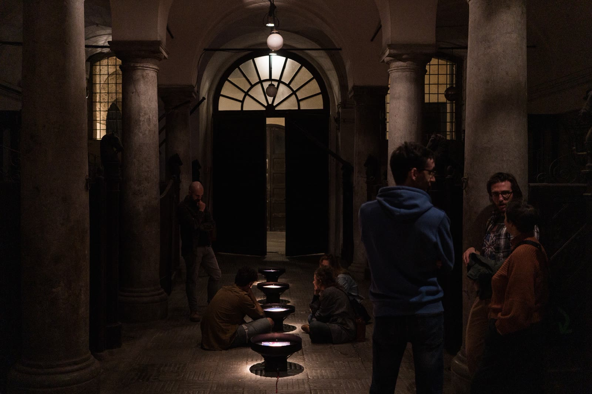
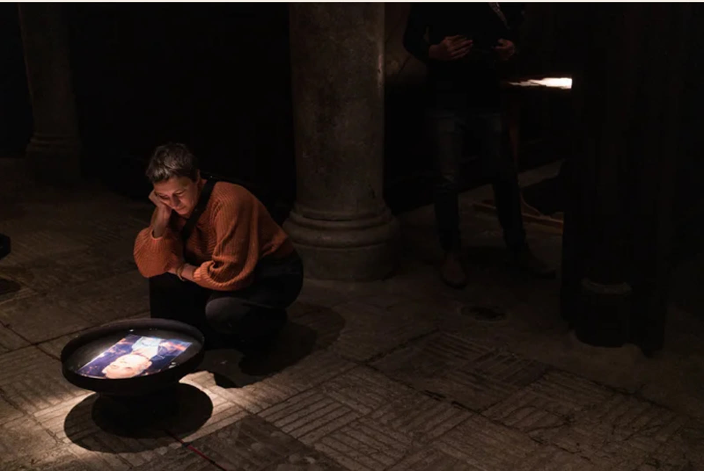
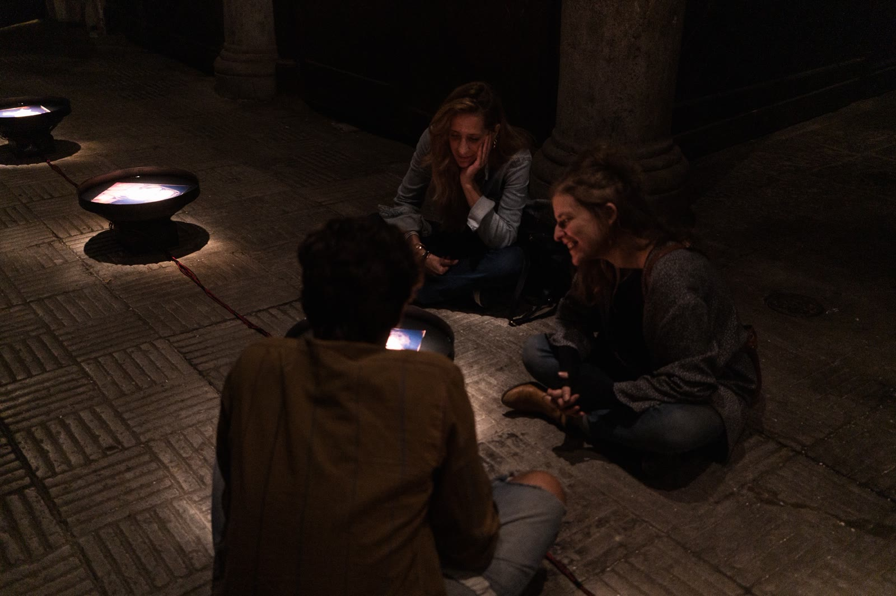

Le Frequenze della memoria
Amplificare il valore della memoria, raccogliere testimonianze, lasciarne traccia. I cantastorie de «Le Frequenze della memoria» sono alcuni abitanti over 70 del quartiere Brancaccio, sulla costa sud-est di Palermo. Abbiamo intervistato ognuno di loro chiedendo di raccontarci il proprio punto di vista sul quartiere: la loro storia, i giochi d'infanzia, il lavoro, l'amore, il mare, il loro mare. Al termine della conversazione abbiamo scattato loro una foto, un ritratto — immagini guida del nostro viaggio.
La capacità di tenere in memoria informazioni dipende dalla velocità di alcune particolari onde cerebrali, ognuna caratterizzata da una differente frequenza. L'attività ritmica dei neuroni che codificano le informazioni da memorizzare genera onde che oscillano fra 4 e 7 hertz, la frequenza tipica delle «onde theta». Le frequenze dei nostri testimoni diventano così moto per muovere la materia acqua, elemento primordiale, presente nella città e nel quartiere.
«Le Frequenze della memoria» è un viaggio circolare. Una macchina da scrivere, una frase da lasciare, un ricordo da donare: le frequenze orali mutano in parola scritta, l'acqua diviene inchiostro che incide il tempo — una nuova oralità da tramandare e donare come eredità alle nuove generazioni.


